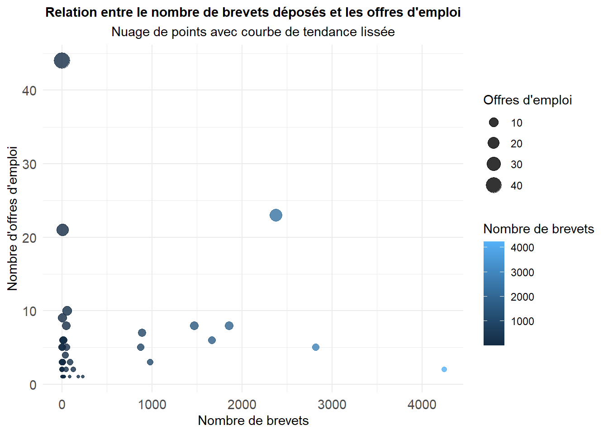
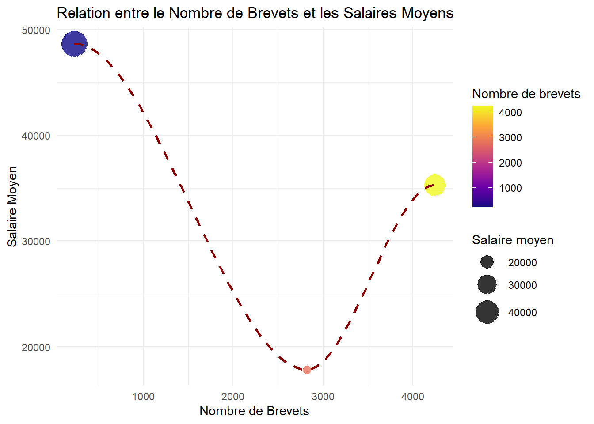
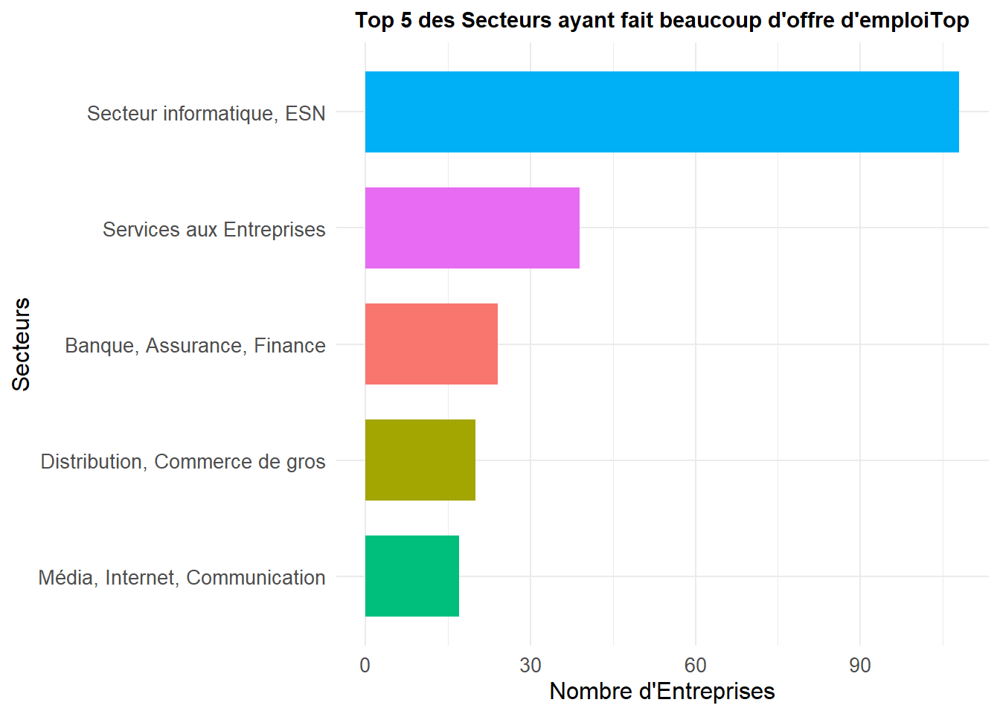
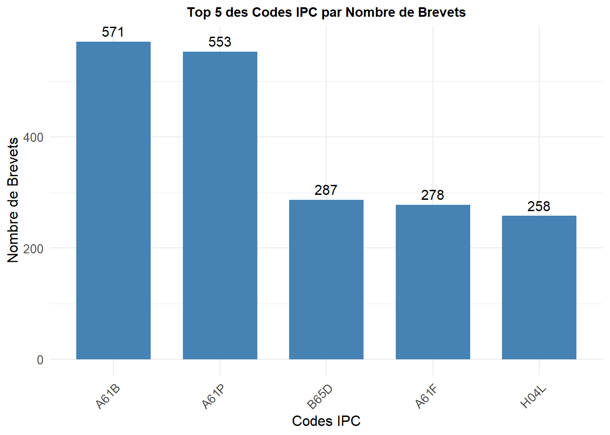
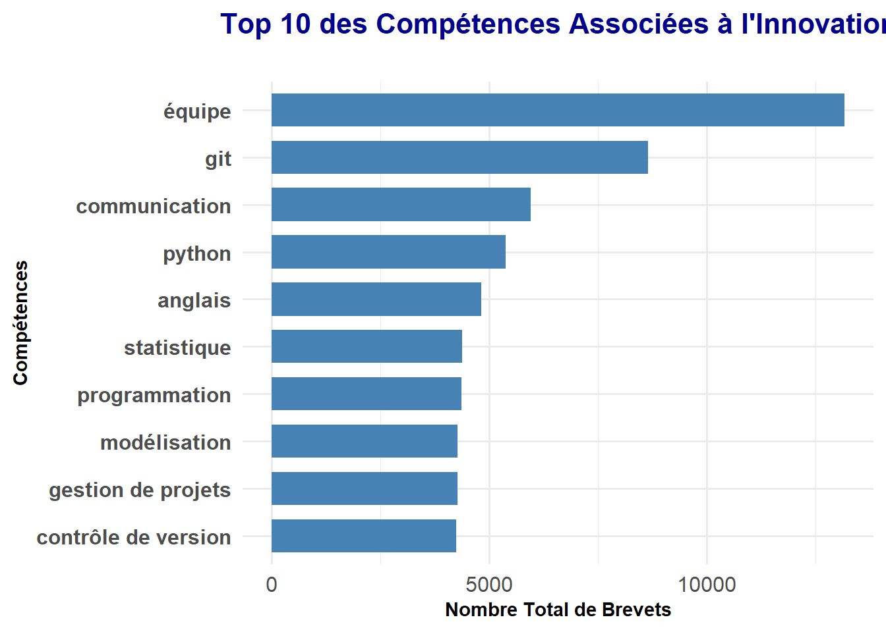
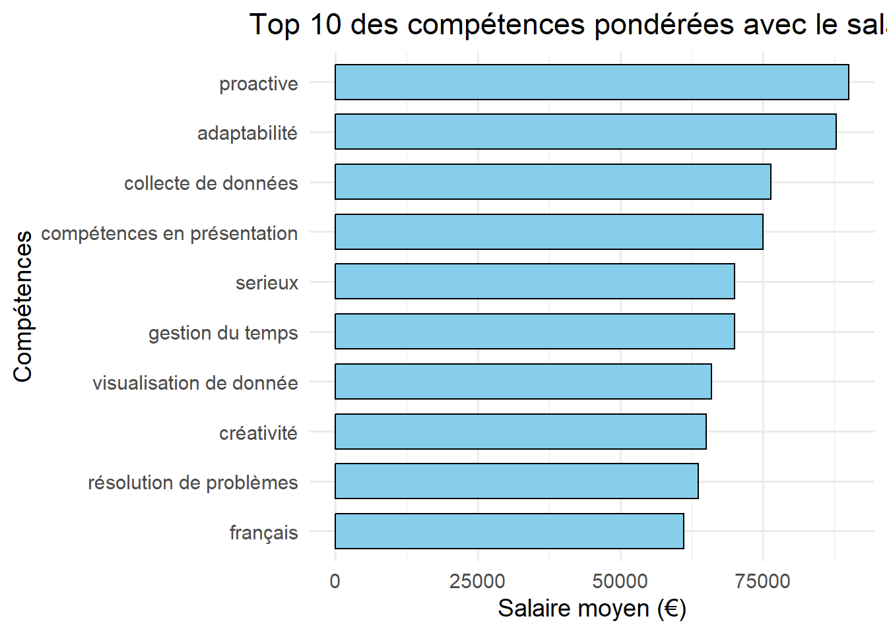

ANALYSE DE DONNEES
Relation entre le nombre de brevets et les offres d’emploi en fonction des entreprises
Ce graphique montre une relation non linéaire entre le nombre de brevets déposés et les offres d’emploi. La tendance indique que les entreprises avec un nombre modéré de brevets enregistrent le plus d’offres d’emploi. En revanche, celles avec un très grand nombre de brevets semblent recruter moins. Cela suggère que l’innovation (brevets) n’est pas toujours directement corrélée à la demande en compétences.Ce graphique montre une relation non linéaire entre le nombre de brevets déposés et les offres d’emploi. La tendance indique que les entreprises avec un nombre modéré de brevets enregistrent le plus d’offres d’emploi. En revanche, celles avec un très grand nombre de brevets semblent recruter moins. Cela suggère que l’innovation (brevets) n’est pas toujours directement corrélée à la demande en compétences.
Relation entre Innovation (Nombre de Brevets) et les salaires moyens

Ce graphique représente la relation entre le nombre de brevets déposés et les salaires moyens. La tendance observée est non linéaire, avec une forme en U inversé. Les entreprises déposant peu de brevets affichent des salaires moyens élevés, tandis que celles ayant un nombre modéré de brevets connaissent une diminution notable des salaires. En revanche, pour les entreprises très innovantes (nombre de brevets supérieur à 4000), les salaires augmentent à nouveau. Cela suggère une relation complexe entre innovation et rémunération, probablement influencée par d’autres facteurs comme la taille de l’entreprise ou le secteur d’activité.
Top 5 des Secteurs ayant fait beaucoup d’offre d’emploiTop 5 des Secteurs ayant fait beaucoup d’offre d’emploiTop 5 des Secteurs ayant fait beaucoup d’offre d’emploiTop 5 des Secteurs ayant fait beaucoup d’offre d’emploi.
Top 5 des Secteurs ayant fait beaucoup d’offre d’emploi

Ce graphique montre les 5 secteurs qui ont généré le plus d’offres d’emploi. En tête, le secteur informatique et ESN domine largement, ce qui reflète la forte demande pour des compétences technologiques et numériques. Juste derrière, les Services aux Entreprises occupent la deuxième place, prouvant l’importance des services professionnels. Ensuite, on retrouve la Banque, Assurance, Finance, ainsi que la Distribution et le Commerce de gros, qui restent des secteurs essentiels en termes de création d’emplois. Enfin, le secteur Média, Internet, Communication clôture le top 5, confirmant son rôle dans la demande liée au numérique. La forte disparité avec l’informatique met bien en évidence l’importance de la transformation digitale dans le marché de l’emploi.
Top 5 meilleurs codes IPC par nombre de brevets

Ce graphique présente les 5 principaux codes IPC par nombre de brevets déposés. Les deux premiers codes, A61B et A61P, se démarquent nettement. A61B (technologies médicales) et A61P (préparations thérapeutiques) montrent une forte activité dans les secteurs de la santé et de la pharmacie, suggérant une demande élevée en compétences dans la recherche médicale et l’ingénierie biomédicale. B65D (emballages et conteneurs) et A61F (prothèses et implants) indiquent une présence notable d’innovations en logistique et dans les dispositifs médicaux. Enfin, H04L (transmission de données numériques) reflète l’importance des technologies de l’information et des télécommunications, où la demande en compétences numériques telles que réseaux et cybersécurité est forte. Ce graphique met en évidence une concentration des brevets dans les secteurs médicaux, pharmaceutiques et technologiques, suggérant que ces domaines sont moteurs d’innovation et fortement associés à une demande croissante de profils qualifiés dans la science des données, la R&D et l’ingénierie spécialisée.
La relation entre les meilleues compétences demandées et les entreprises qui deposent des brevets
Top 10 des compétences associées avec l’inovation
| top_skill_req | total_patents |
|---|---|
| équipe | 13173 |
| git | 8650 |
| communication | 5957 |
| python | 5389 |
| anglais | 4825 |
| statistique | 4389 |
| programmation | 4363 |
| gestion de projets | 4284 |
| modélisation | 4284 |
| contrôle de version | 4247 |
Top 10 des Compétences Associées à l’Innovation

Ce graphique met en évidence les 10 compétences les plus associées à l’innovation, mesurées par le nombre total de brevets. La compétence “équipe” se distingue comme la plus importante, soulignant l’importance du travail collaboratif dans les entreprises innovantes. Des compétences techniques comme “git”, “python”, et “contrôle de gersion” reflètent le rôle crucial des outils de programmation et de gestion de code. Par ailleurs, des compétences transversales comme la “communication” et la “gestion de projets” démontrent leur pertinence dans la coordination des efforts d’innovation. Les compétences analytiques, telles que la “statistique” et la “modélisation”, sont également essentielles pour les développements avancés. Enfin, la maîtrise de l’anglais confirme son importance dans les environnements scientifiques et technologiques globaux.
Top 10 des compétences pondérées avec le salaire

Ce graphique montre les compétences les plus souvent associées aux salaires élevés, en fonction de leur importance relative. On remarque que des qualités comme la proactivité et l’adaptabilité prennent une grande place, ce qui prouve leur rôle clé dans les postes bien payés. Côté technique, des outils spécifiques comme AWS, Seaborn ou Excel sont aussi très valorisés, ce qui confirme que les compétences spécialisées sont essentielles. On retrouve également des compétences en IA, notamment le NLP (traitement du langage naturel), qui montrent l’importance des technologies innovantes. Les langues, comme le français, ont aussi leur importance, surtout dans des contextes internationaux. Enfin, des qualités personnelles comme l’autonomie et le sérieux sont clairement associées à de bons salaires, ce qui prouve que les entreprises recherchent un mix entre compétences techniques et qualités humaines.